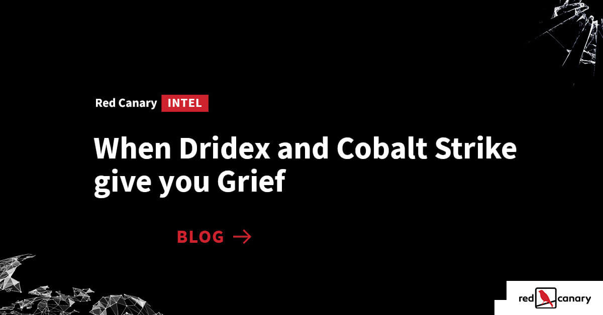

Scenario #2 Analysis
#Uncommon file name and path in system32, tm1jg\tpminit.exe, tpminit.exe, normally lives above in the system32 folder
Parent Process: c:\windows\system32\tm1jg\tpminit.exe
#[https://www.virustotal.com/gui/file/521a8013c45d99a20f341e1ae9910de797696e79bc6719bb5aa92be967203f3c](https://www.virustotal.com/gui/file/521a8013c45d99a20f341e1ae9910de797696e79bc6719bb5aa92be967203f3c)
Parent MD5: f0d6fa1110efffd3a773757a2db0c950
#parent commandline process for tpminit.exe
Parent CLI: C:\Windows\system32\Tm1jg\TpmInit.exe
#Suspicious path and name for the DLL, potentially indicating persistence or malware
Parent File Write: c:\users\acme123\appdata\roaming\microsoft\3ztbfrz\version.dll
#No matches for this hash
File MD5: a4b0ad1bb7cfbd3cbc40860197613340
#Legitimate Windows utility, but its use here raises concern due to the nature of the task being created
Process: c:\windows\system32\schtasks.exe
#https://www.virustotal.com/gui/file/fb024503622e00466f3c18fc69737f2c217fa39ef075718b25619b93ce3a1c62
Process MD5: 2e9e198247bf0e9bd94b42286798a5ac
#Creates a scheduled task named "Jzijbnrsxnvm" that runs every 60 minutes under the user "acme123," executing UI0Detect.exe from the suspicious directory C:\Users\acme123\AppData\Roaming\Microsoft\3ztBfrz. This suggests persistence and potentially malicious activity.
Process CLI: schtasks.exe /Create /F /TN “Jzijbnrsxnvm” /TR C:\Users\acme123\AppData\Roaming\Microsoft\3ztBfrz\UI0Detect.exe /SC minute /MO 60 /RU “acme123”
#New payload activity or modificaiton count
File modification count: 1Red Canary Intel: When Dridex and Cobalt Strike give you Grief
Many conspicuous, detectable behaviors manifest in the leadup to a Grief ransomware infection. Here’s what you need to look out for.

Overview
This activity indicates potential malicious activity within a Windows environment, characterized by the creation and execution of uncommon files and the misuse of legitimate system utilities for persistence. Key indicators include:
- Unusual Executable Locations and Names: Presence of
tpminit.exein a non-standard directory. - Suspicious DLL Deployment: Dropping of
version.dllin the user’sAppData\Roamingdirectory. - Abuse of
schtasks.exe: Creation of a concealed scheduled task to maintain persistence.
Findings
- The
System32directory typically contains legitimate Windows system files. The presence of a subdirectory namedtm1jgis unusual and does not correspond to standard Windows folder structures. tpminit.exerun from a non standard windows location likely to side load or search order hijack the maliciousversion.dllinto memory.- VirusTotal analysis for the parent process hash (
f0d6fa1110efffd3a773757a2db0c950) yields no matches, indicating it might be either a new or customized malware variant. - Both the child process (
tpminit.exe) and parent hash (f0d6fa1110efffd3a773757a2db0c950) return no hash matches, further suggesting potential novel activity or obfuscation to evade detection. - Legitimate DLLs are rarely dropped into user-specific
AppData\Roamingdirectories, especially within obfuscated or randomly named folders like3ztbfrz - Establishing a scheduled task that runs at regular intervals ensures the persistence of the malicious payload (
UI0Detect.exe), allowing it to survive reboots and potentially evade one-time detection methods. - The use of randomized folder (
3ztBfrz) and executable names (UI0Detect.exe) is indicative of attempts to obscure the malicious components.
Summary
The detection of tpminit.exe within an atypical directory and the subsequent misuse of schtasks.exe to establish a persistent scheduled task strongly indicate malicious activity aimed at maintaining persistence and potentially executing further harmful actions on the system. The absence of known hash matches suggests either a novel malware variant or evasion techniques employed to avoid detection.